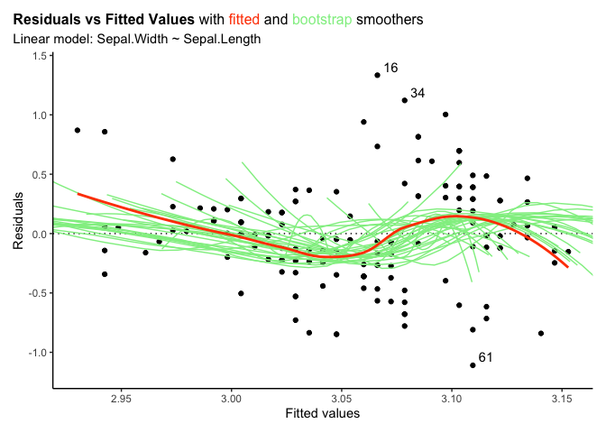
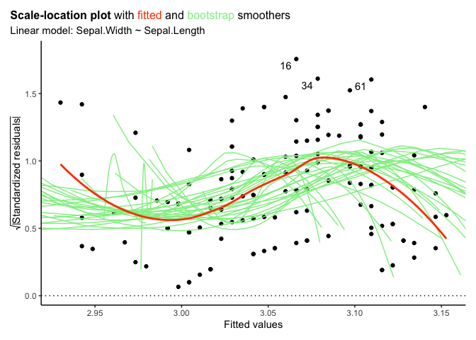
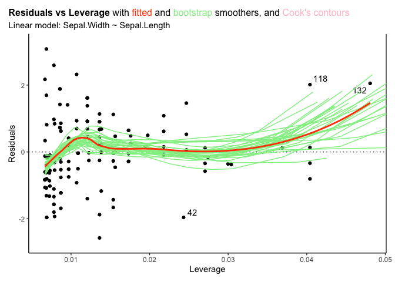

An R package which provides summary information and plots which have been altered from those provided by base R.
It now handles glm object, as well as svyglm objects from the survey package.
Installation
You can install the released version of iNZightRegression from CRAN with:
# Not yet on CRAN - please use devtools below
# install.packages("iNZightRegression")And the development version from GitHub with:
# install.packages("devtools")
devtools::install_github("iNZightVIT/iNZightRegression")Example
Plots and summaries of model objects:
library(iNZightRegression)
#> *****************************************************************
#> * Loaded iNZightRegression *
#> * *
#> * Methods imported from 'iNZightPlots': *
#> * - use `inzplot()` for diagnostic plots of model objects *
#> * - use `inzsummary()` for a summary of model objects *
#> *****************************************************************
iris.lm <- lm(Sepal.Width ~ Sepal.Length, data = iris)
set.seed(246) # for bootstrap smoothers
inzplot(iris.lm, which = "residual")
inzplot(iris.lm, which = "scale")
inzplot(iris.lm, which = "leverage")
inzsummary(iris.lm)
#>
#> Model for: Sepal.Width
#>
#> Coefficients:
#> Estimate Std. Error t value p-value 2.5 % 97.5 %
#> (Intercept) 3.419e+00 2.536e-01 1.348e+01 <2e-16 *** 2.918 3.92002
#> Sepal.Length -6.188e-02 4.297e-02 -1.440e+00 0.152 -0.147 0.02302
#> ---
#> Signif. codes: 0 '***' 0.001 '**' 0.01 '*' 0.05 '.' 0.1 ' ' 1
#>
#> Residual standard error: 0.4343 on 148 degrees of freedom
#> Multiple R-squared: 0.01382, Adjusted R-squared: 0.007159